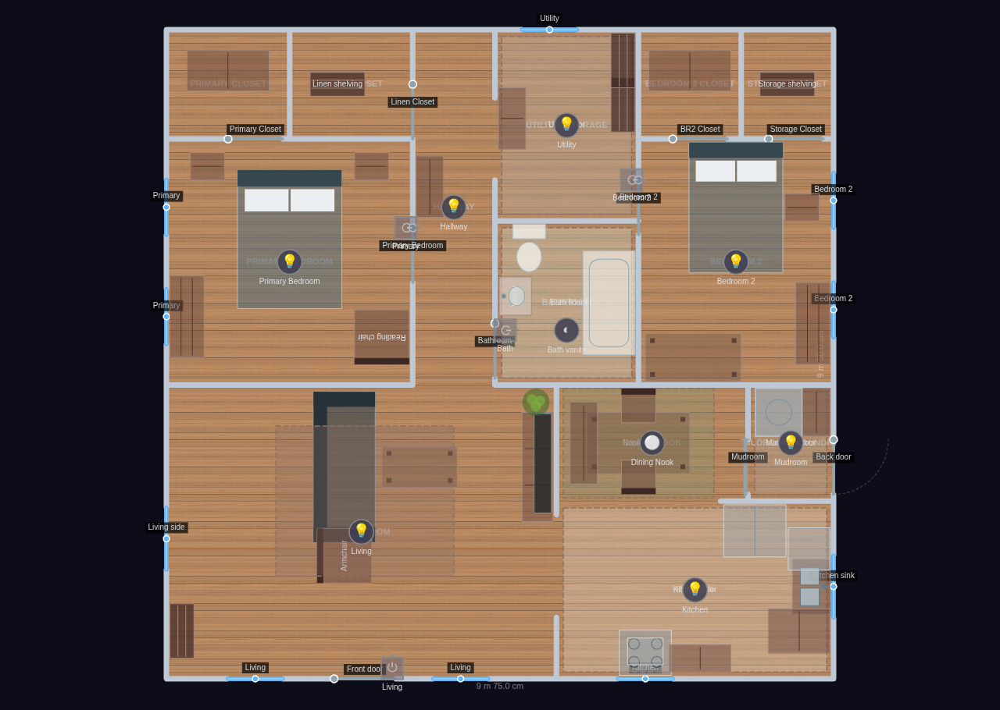
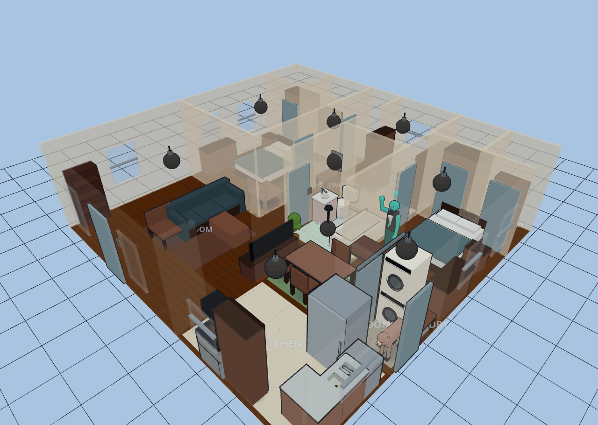
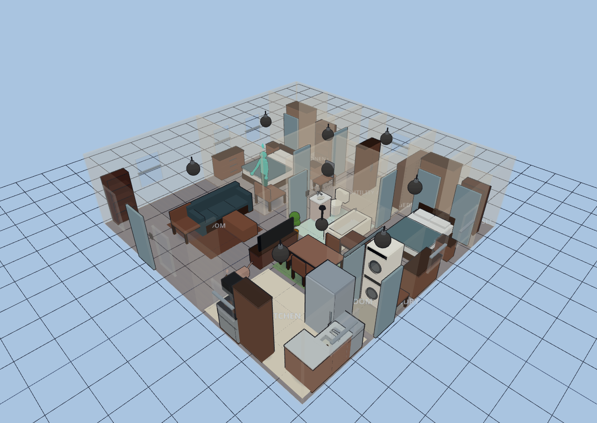

Small 2-Bed Bungalow
Explore it live above, or import the JSON in Diorama under Settings ▸ Data ▸ Configurations ▸ Import.
~997 sq ft (92.6 m²) · 1 floor · 13 rooms
A tidy 1940s "minimal traditional" cottage — a modest single-story starter
home. A front living room takes the whole street-facing left half; behind it a
compact galley kitchen opens (over pass-throughs, no doors) to an interior
breakfast nook and a back mudroom/laundry. A single central hallway serves the
private wing: a primary bedroom with its own closet, a full bath, a walk-through
utility/storage alcove, and a second bedroom, each with reach-in closets. Warm
honey-oak floors and cream plaster-look walls throughout; wet rooms get their
tile/concrete look from oversized floor-colored rug overlays.
Living Room: sofa facing the TV wall, upholstered armchair by the side window,
coffee table, corner bookshelf, large seating rug, a corner plant.
Kitchen: galley run — sink under the east window, dishwasher, fridge, stove with
over-range microwave, base counter and cabinets; pale tile-look floor.
Dining Nook: interior 4-seat breakfast table with a window-side bench, sage rug.
Mudroom / Laundry: washer + dryer at the back door, a boot bench, utility-tile floor.
Primary Bedroom: queen bed, two nightstands, dresser, a reading chair by the window.
Primary Closet: reach-in wardrobe.
Linen Closet: hall shelving.
Hallway: a small bench near the linen closet.
Bathroom: toilet, vanity sink, tub along the east wall; seafoam tile-look floor.
Utility / Storage: storage shelving + a cabinet, the walk-through to Bedroom 2.
Bedroom 2: full bed, nightstand, desk by the east windows, dresser.
Bedroom 2 Closet / Storage Closet: reach-in wardrobe + general storage shelving.
Period detail: the dining-nook opening into the mudroom/laundry is a barn slider —
the wall east of the leaf keeps a full 900 mm for the panel to park on.
Bungalow
13 rooms · 93 m² footprint


Glass-house overview
